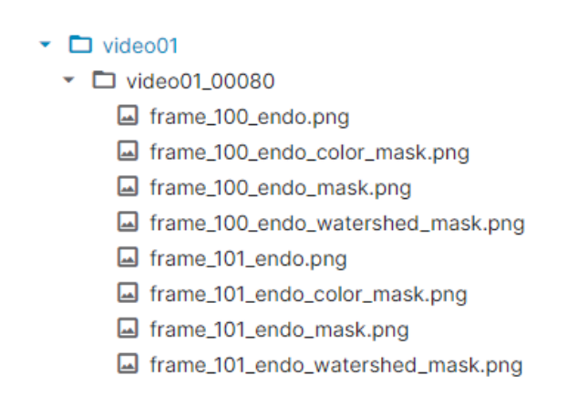
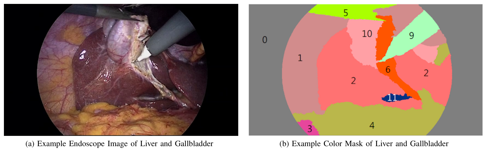
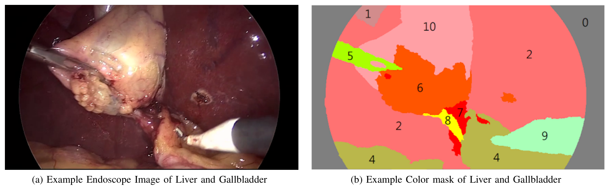
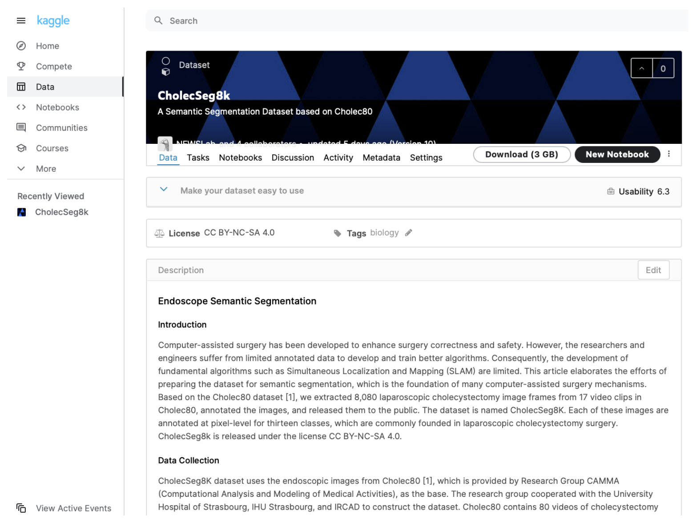

图文解读
1背景与动机
内镜手术需要知道镜头在哪，现有外部传感器做不到足够准。 论文举例说，Hu 等人的磁定位系统要用 16 个传感器才达到 5.6 mm 的精度，亚厘米级定位并不现实。
作者设想用基于图像的 SLAM（同时定位与建图）代替外部传感器：把实时画面和事先采集的参考数据比对来定位。户外可以靠卫星定位挑出要比对的参考数据，体内不行，于是作者提出先识别画面里的器官，再用识别结果去检索参考数据。
识别器官要靠语义分割（给每个像素分配类别）或目标检测，两者都需要大量标注好的内镜图像，而这类公开数据很少。这就是论文要补的缺口。
2核心观点速览
这是一份数据发布说明：没有模型、没有划分、没有基线。 它只做一件事，在 Cholec80 已有视频上补像素级标注。
- 来源：
Cholec80的 17 个视频，取 101 段、每段 80 帧连续画面，共 8,080 帧，分辨率 854×480。 - 标注：13 个类别，以肝脏和胆囊为中心；胃肠道和肝韧带是有意合并的宽类。
- 发布：每帧一张原图加三种 PNG 掩码，总计 3GB，Kaggle 上以 CC BY-NC-SA 4.0 发布。
- 风险：类别极不平衡，视频选择标准、标注者与一致性，论文未说明。
接下来按“数据怎么组织、怎么构建、统计说明了什么”的顺序展开。
3数据从哪来，补了哪一层
Cholec80 是 CAMMA 研究组与斯特拉斯堡大学医院等机构合作发布的数据，含 13 名外科医生完成的 80 台胆囊切除术视频，帧率 25 fps，只有器械和手术阶段标注。
本文从中选出“高度相关”的 17 个视频，跳过准备阶段和结束阶段，在抽出的帧上做像素标注。具体选了哪些视频、按什么标准选，论文未说明，这让使用者无法判断数据偏向哪些术者或哪些手术难度。
论文没有与其他手术分割数据集作比较，新意只能相对 Cholec80 来说：同一批视频，从阶段级标注细化到像素级。
4一个样本长什么样
数据按两级目录存放。第一级以视频命名，例如 video12；第二级以“视频名_起始帧号”命名，每个目录存 80 帧连续画面，例如 video12_15750 存第 15750 到 15829 帧。
连续 80 帧意味着目录内画面几乎相同。 按 25 fps 推算，一个目录只覆盖约 3.2 秒。每帧有四个 PNG：原图、颜色掩码、标注工具掩码和分水岭掩码；读标签要用分水岭掩码，它三个通道都存类别 ID。

video01_00080 目录下的文件，每帧对应原图和三种掩码。每段起始帧怎么选，101 个目录在 17 个视频间如何分布，论文都未说明。
513 个类别能回答什么问题
类别包括黑色背景、腹壁、肝脏、胃肠道、脂肪、抓钳、结缔组织、血液、胆囊管、电钩、胆囊、肝静脉和肝韧带，ID 依次为 0 到 12。
两个类别有意做宽：胃肠道类包括胃、小肠和附近组织；肝韧带类包括冠状韧带、三角韧带、镰状韧带、肝圆韧带、静脉韧带和小网膜。所以这份数据适合回答“肝脏、胆囊、器械在哪”，不适合细粒度解剖识别。
唯一写明的标注规则是：视野边缘光线暗、人也难判断的区域保持原样，因为目标是分割器官。器械边界的误差因此部分来自标注本身。标注者是谁、有无医生复核、一致性如何，论文未说明。

6像素占比说明了什么
论文唯一的定量结果是图 3 的像素占比。腹壁 29.46%、肝脏 29.393%、脂肪 20.23% 三类占了大部分像素；胆囊 8.893%；稀有类中胆囊管只有 0.05%，肝静脉只有 0.018%。
含义是平均指标会掩盖稀有类的失败。 胆囊管是手术中最需要辨认的结构之一，却几乎没有像素。论文提醒了不平衡，但没有给出每类出现的帧数，也没有实验验证其影响。
图中只有 12 类，黑色背景不在其中，分母是否排除背景论文未说明。
7论文数字自洽吗
正文与图表有几处对不上：
- 正文说图 3(b) 是占比低于 1% 的类，并说抓钳和电钩低于 1%，但图中分别是 3.317% 和 1.824%。
- 图 3(a) 含胃肠道 2.557%，比图 3(b) 的抓钳还低，两组划分依据论文未说明。
- 正文把肝脏和腹壁写成约 30%、胆囊写成 10%，是取整后的数。
- 图 6 的描述把电钩写成 class ID 10，表 I 中电钩是 9，掩码上也标的是 9。
使用者应以图表或自行重算为准。 图 1 的区域编号和配色与类别表对不上，论文没有解释。

8结果没说什么
- 没说这些标注够训练出好模型。 没有基线，就无法知道 8,080 帧能支撑什么精度。
- 没说分割对定位有用。 论文的动机是
SLAM，但没有任何定位实验；基于特征点的SLAM也许不需要器官语义，论文没有区分。 - 没说不平衡是主要瓶颈。 加权损失或重采样也许足以缓解，论文没有对比。
我的判断：由于片段内帧高度冗余，有效的独立样本远少于 8,080，规模更接近一百段左右的场景。
9复现要注意什么
- 按视频或至少按目录划分，不要按帧随机划分。
- 用分水岭掩码读类别 ID，不要把颜色掩码当标签。
- 报告每类交并比，单独看胆囊管、肝静脉和血液。
- 类别权重按图中数字或自行重算，不要用正文取整的数字。
- 许可是非商业、相同方式共享，商业用途不可直接使用。
